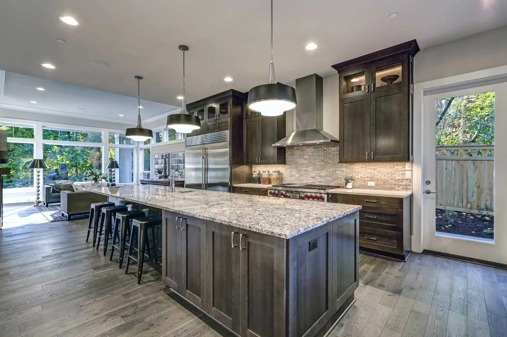

A family-owned business built on hands-on craftsmanship, honest pricing, and 40+ years of Utah stone fabrication.

Howard Gerstner
Owner & Master Fabricator (Since 1984)
Granite Countertops of Utah LLC is built around one person: Howard Gerstner. Fabricating and installing stone in Utah since 1984, Howard brings over 40 years of hands-on experience to every project—from private Wasatch Front homes to landmark commercial properties including the St. Regis Hotel at Deer Valley and the Huntsman Cancer Institute.
When you hire us, you get Howard and his dedicated crew from the first phone call through final installation. He visits your home for a free measurement, accompanies you in person to Salt Lake wholesale slab yards to pick your exact slabs, plans the vein layout and mitered edges, and oversees the final installation. Full accountability, zero surprises.
Howard fabricates granite, marble, quartzite, quartz, porcelain, soapstone, limestone, and onyx. His reputation across Salt Lake, Utah, and Summit County was built on word-of-mouth referrals.
If you want to talk countertops, call Howard directly. He picks up.
Call (801) 376-3856Why we skip the retail showroom and walk the wholesale stone warehouses in Salt Lake County with you in person.
A 4-inch sample square in a retail showroom never shows the dramatic vein movement, crystal deposits, or color shifts across a real slab of granite, marble, or quartzite. Howard meets you directly at Salt Lake County stone wholesalers so you see and touch the full 10x6 ft slab before buying.
Having a master fabricator stand beside you at the slab yard saves money and prevents mistakes. Howard checks each bundle for structural soundness, plans how veins will wrap across mitered edges and backsplashes, and calculates exact yield so you don't buy an extra slab you don't need.
We work daily with Salt Lake City's largest stone importers and distributors—including MSI Surfaces, Arizona Tile, The Stone Collection, Daltile, and GS Marble & Granite. Because we don't carry expensive retail showroom overhead, every dollar goes directly into better stone and precision fabrication.
We give you a straight quote with no hidden fees or surprise charges. If something changes, we tell you upfront before we proceed.
Stone is unforgiving. We measure twice, cut once, and take the time to get every mitered edge, cutout, and seam right.
We show up on time, protect your floors and cabinetry, clean up after ourselves, and treat your home the way we want our own treated.
Have a question about sealing or care years after installation? Call Howard directly. We stand behind our work long after the job is done.
Call us for a free, no-pressure estimate. We will visit your home, take measurements, and walk you through your options.